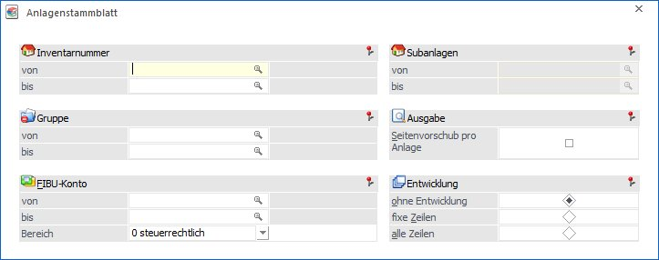
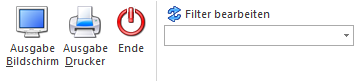
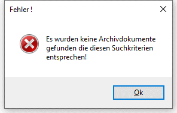
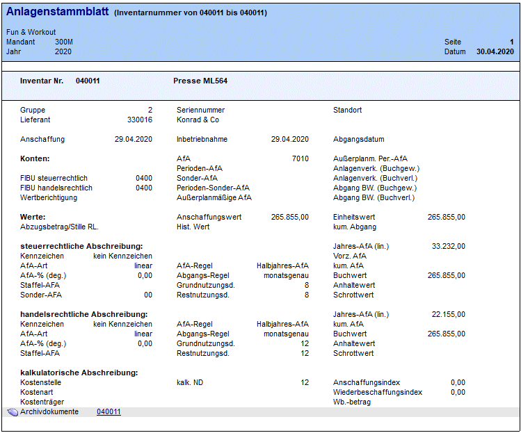

Es besteht die Möglichkeit, sich für jedes einzelne Inventargut ein eigenes Anlagenstammblatt mit den steuerrechtlichen, handelsrechtlichen und kalkulatorischen Stammdaten sowie den jeweiligen Bewegungen (Zu- und Abgänge, Umbuchungen) auszudrucken.
Dazu gehen Sie in den Menüpunkt
1 Auswertungen
1 Anlagenstammblatt

Auswahlkriterien
Ø Inventarnummer von - bis
Geben Sie an, von welcher bis zu welcher Inventarnummer Sie Anlagenstammblätter sehen wollen.
Ø Subanlagen
Bei der Einschränkung der Anlagen können auch Nummern von Subanlagegütern eingegeben werden.
Ø Gruppe von - bis
Auswahl einer Gruppe. Im Matchcode werden alle Anlagengruppen angezeigt. Die Auswertung berücksichtigt die entsprechende Eingrenzung.
Ø FIBU-Konto von - bis
Auswahl eines FIBU-Kontos. Im Matchcode werden alle FIBU-Konten angezeigt. Die Auswertung berücksichtigt die entsprechende Eingrenzung.
Ø Bereich
Hier kann entschieden werden, ob für die Ausgabe der Auswertung die steuerrechtlichen oder handelsrechtlichen Werte berücksichtigt werden sollen.
Automatisch vorgeschlagen wird das Abschreibungsverfahren, welches im ANBU-Parameter / Buchen für die Buchungsübergabe definiert ist.
Ø Entwicklung
ü ohne Entwicklung
Die Anlagenstammblätter werden ohne Journalzeilen ausgegeben.
ü fixe Zeilen
Nur die Anlagenjournal-Zeilen, die durch einen AfA-Lauf bereits bestätigt wurden (also nur die Journalzeilen bis zum letzten AfA-Lauf) werden unterhalb der Stammdaten ausgegeben.
ü alle Zeilen
Alle Journalzeilen, die durch die Anlagenhistorie errechnet werden können, d.h. bereits durch den AfA-Lauf festgeschriebene Journalzeilen der Vergangenheit und zukünftige Abschreibungszeilen bis zum Ende der Nutzungsdauer, werden ausgegeben.
Ø Seitenvorschub pro Anlage
Wird die Checkbox aktiviert, erfolgt die Ausgabe in Kontoblattform, d.h. nach jeder Inventarnummer wird ein Seitenvorschub durchgeführt.
Buttons

Ø Ausgabe Bildschirm
Standardmäßig wird die Ausgabe auf dem Bildschirm vorgeschlagen, die auch durch Drücken der F5-Taste gestartet werden kann.
Ø Ausgabe Drucker
Die Ausgabe wird am Drucker ausgegeben.
Ø Ende
Das Fenster wird geschlossen, ohne dass eine Auswertung angezeigt wird.
Ø Filter bearbeiten
Wird der Filter-Button angeklickt, kann ein neuer Filter definiert oder ein bestehender Filter gewählt werden. Dort kann eingestellt werden, nach welchen frei definierbaren Kriterien die Selektion durchgeführt werden soll (Details entnehmen Sie dem Kapitel Filter - Assistent).
Wurden in diesem Fenster bereits Filter angelegt, kann aus der Auswahllistbox ein bestehender Filter gewählt werden. Es werden immer nur die Filter angezeigt, die für das gerade aktive Fenster angelegt wurden.
Hinweis
Das Anlagenstammblatt enthält die Werte zu Beginn des Wirtschaftsjahres und das Anlageverzeichnis zeigt die Werte am Ende des Wirtschaftsjahres auf.
Archivdokumente
Am Ende der Stammdaten existiert die Zeile "Archivdokumente Inventarnummer".
Mit Klick auf den Link der Inventarnummer öffnet sich die Archiv-Vorschau, wenn Archiveinträge für das Anlagegut existieren.
Existiert kein Archiveintrag für die Inventarnummer, kommt folgende Meldung

